|
Segment Processor доступен из диалога логического редактирования ивентов. Выгрузка шума пока не работает, все остальное должно функционировать.
Вызов:
- вкладка КеуEvents - двойной клик на ивенте в таблице ивентов
- В диалоге редактирования ивента мышкой - левый клик - рисуем прямоугольник в окошке 2D-редактора.
Левая сторона прямоугольника обозначает начальную позицию (Start), правая сторона задает размер области редактирования (Size)
Реализованы почти все основные примитивы конструирования трассы.
Copy/Paste - (через собственный внутренний буфер) - пока только Copy
LSA - почти без изменений перенесено из старой версии
Move - Вставка/удаление участка трассы.
При перемещении влево отмеченный блок трассы удаляется и ТЕРЯЕТСЯ, трасса сдвигается справа-налево на размер Size, остаток трассы (за хвостом) забивается фейковым значением, полный размер (километраж) трассы НЕ изменяется
При перемещении вправо отмеченный блок трассы сдвигается направо, хвост трассы, вышедший за пределы километража ТЕРЯЕТСЯ, трасса сдвигается слева-направо на размер Size, опустевший (слева) участок забивается фейковым значением, полный размер (километраж) трассы НЕ изменяется
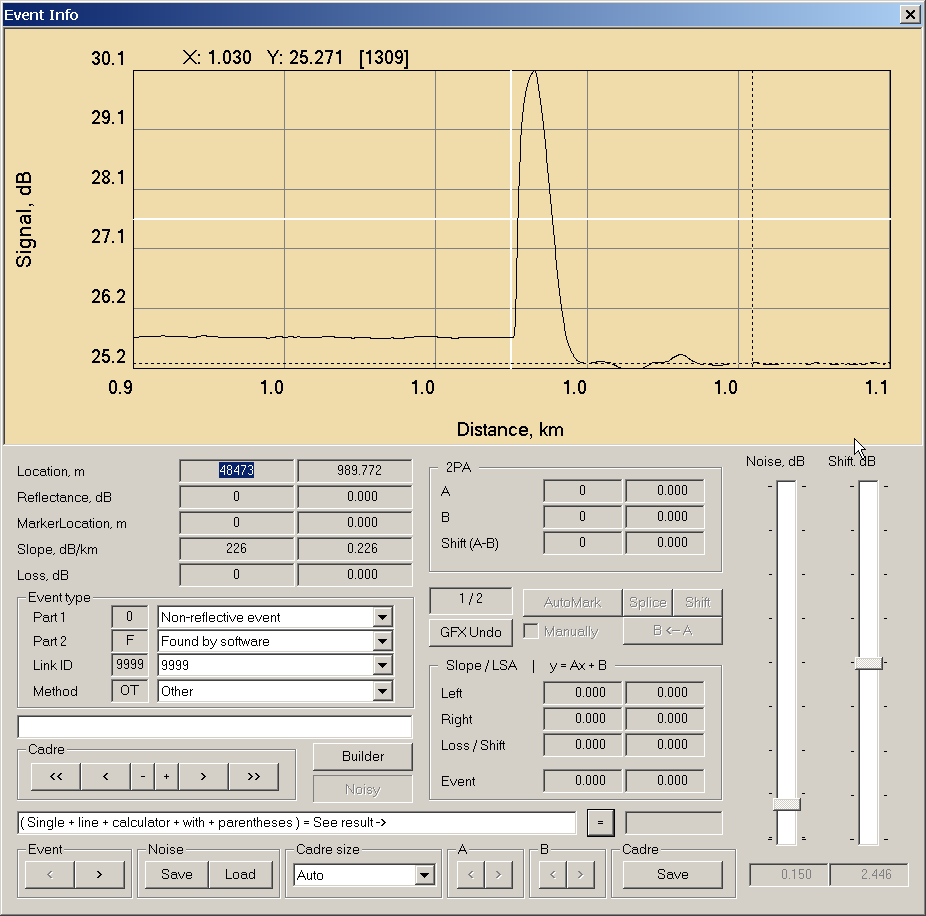
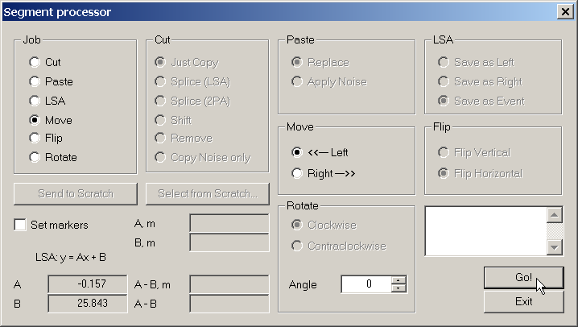
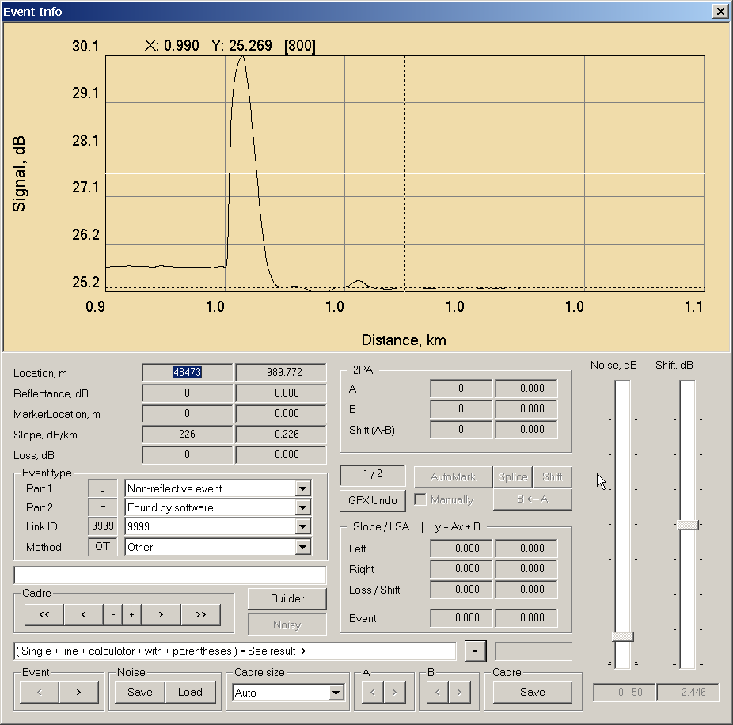
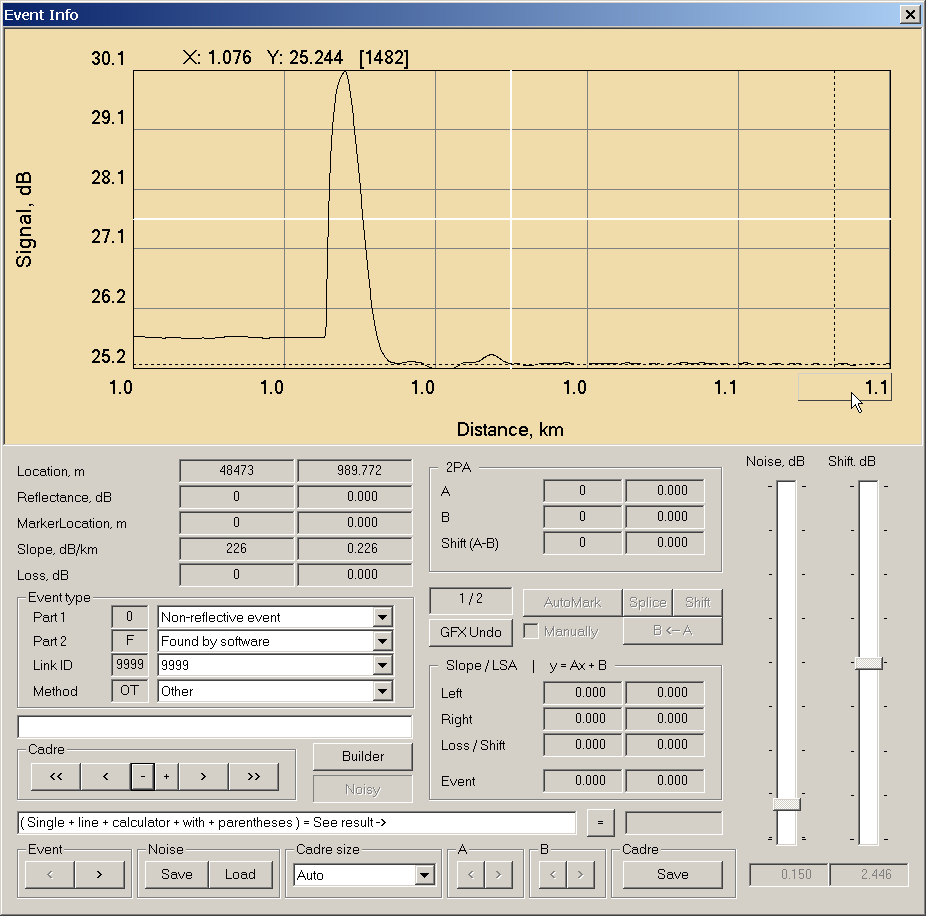
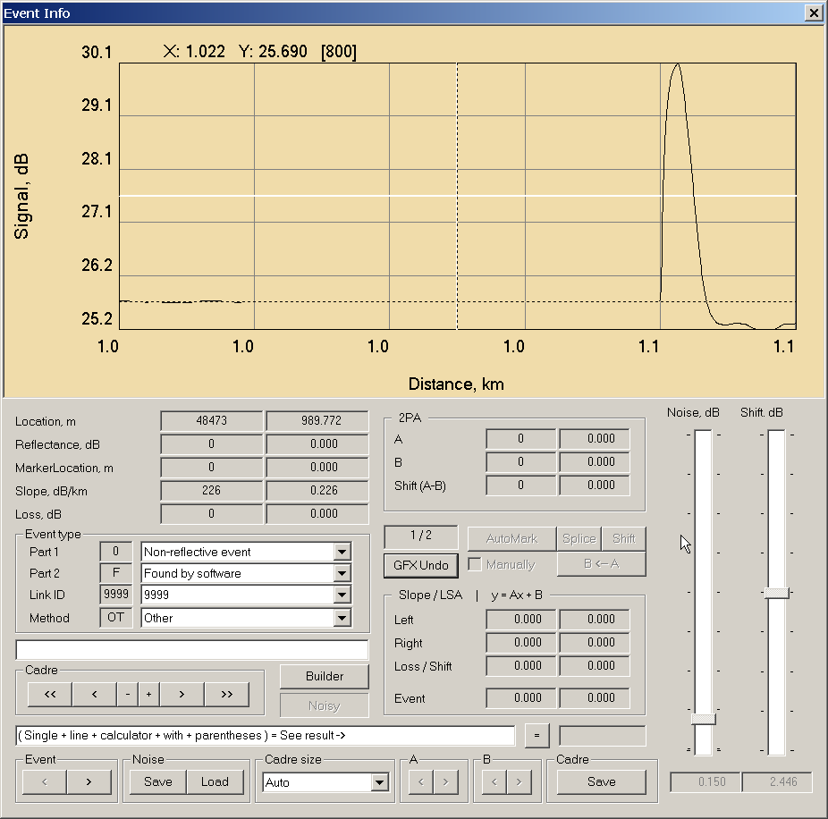
Flip - Зеркальное (вертикальное и горизонтальное) отображение отмеченного сегмента. Размер трассы НЕ изменяется.
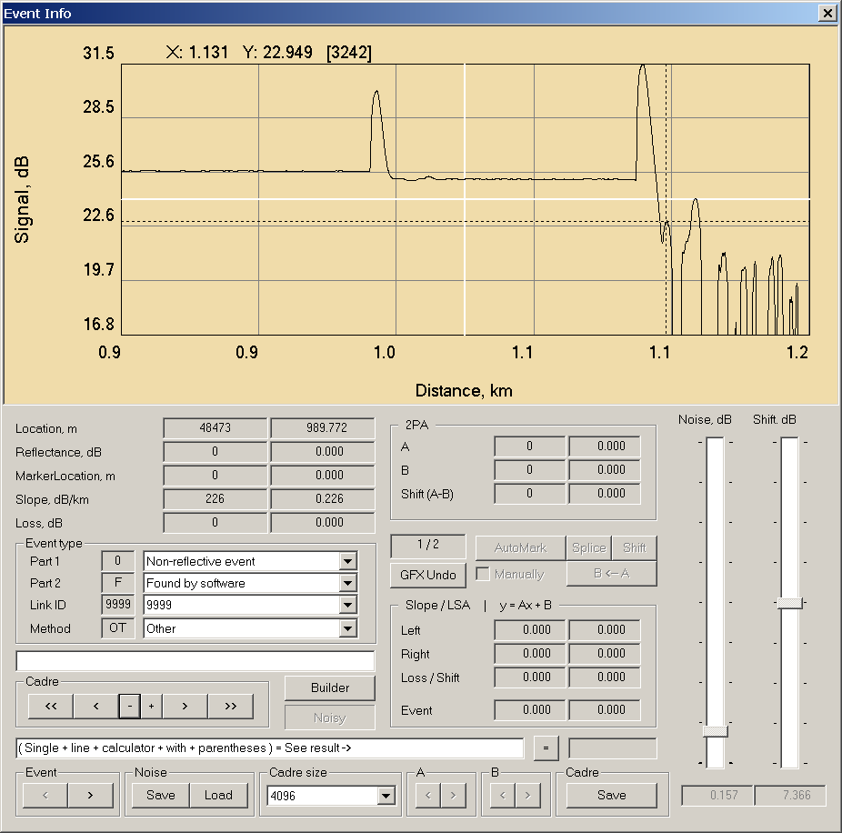
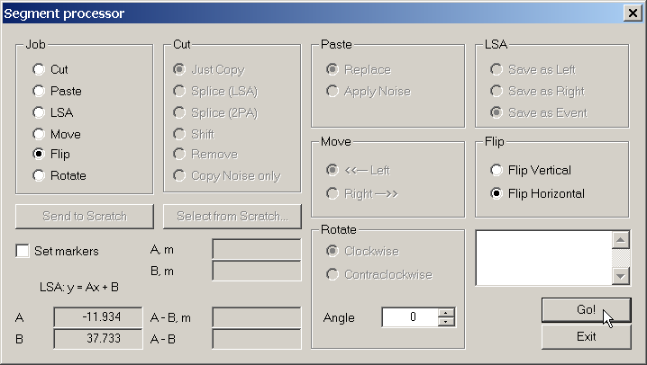
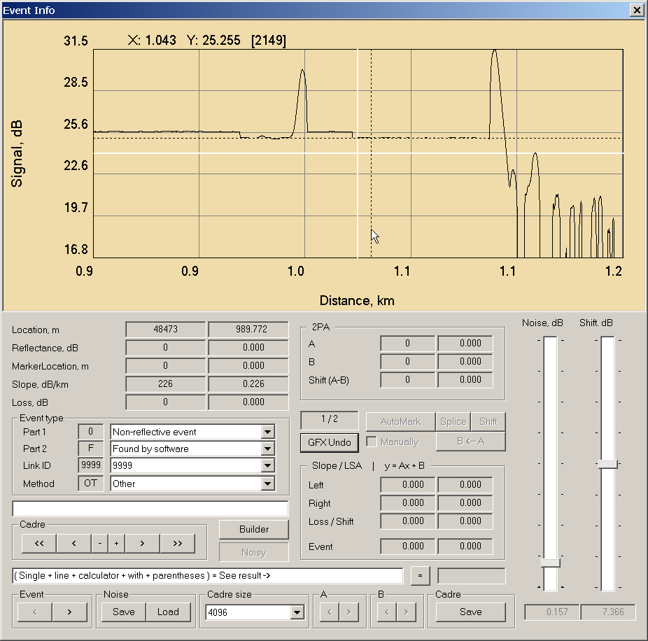
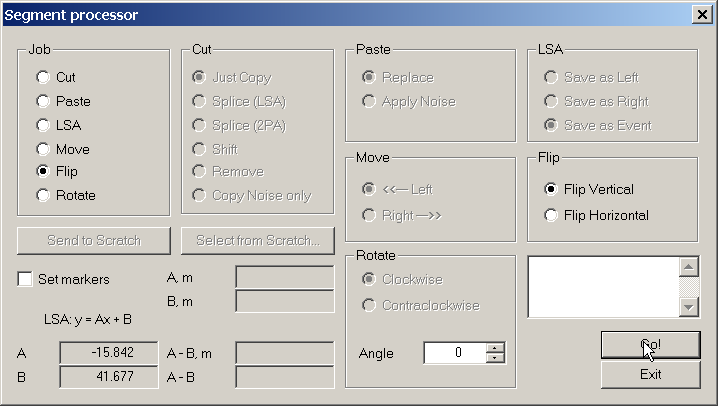
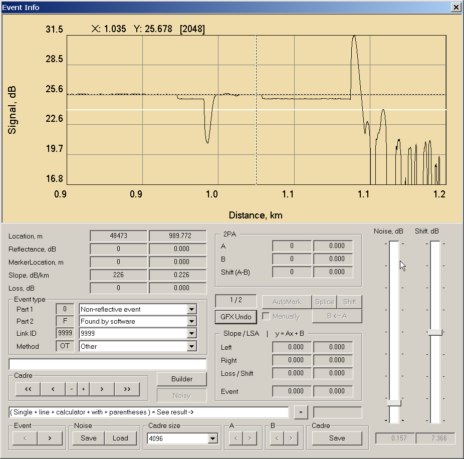
Rotate - Аналогично, вращение (по и против часовой стрелки) на заданный угол. Размер трассы НЕ изменяется.
Copy on Move options
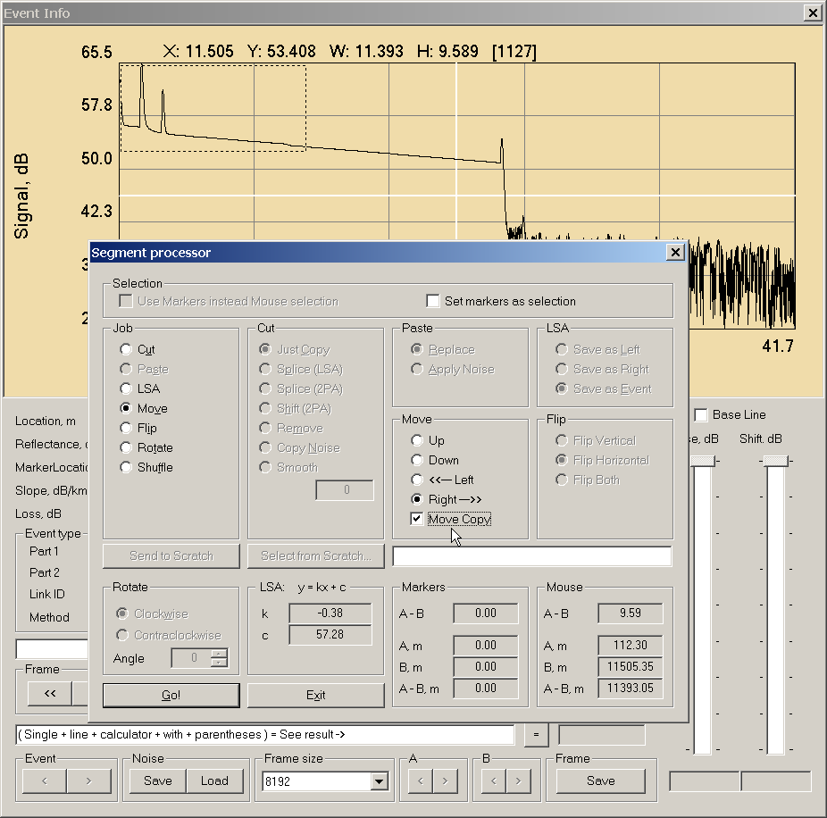
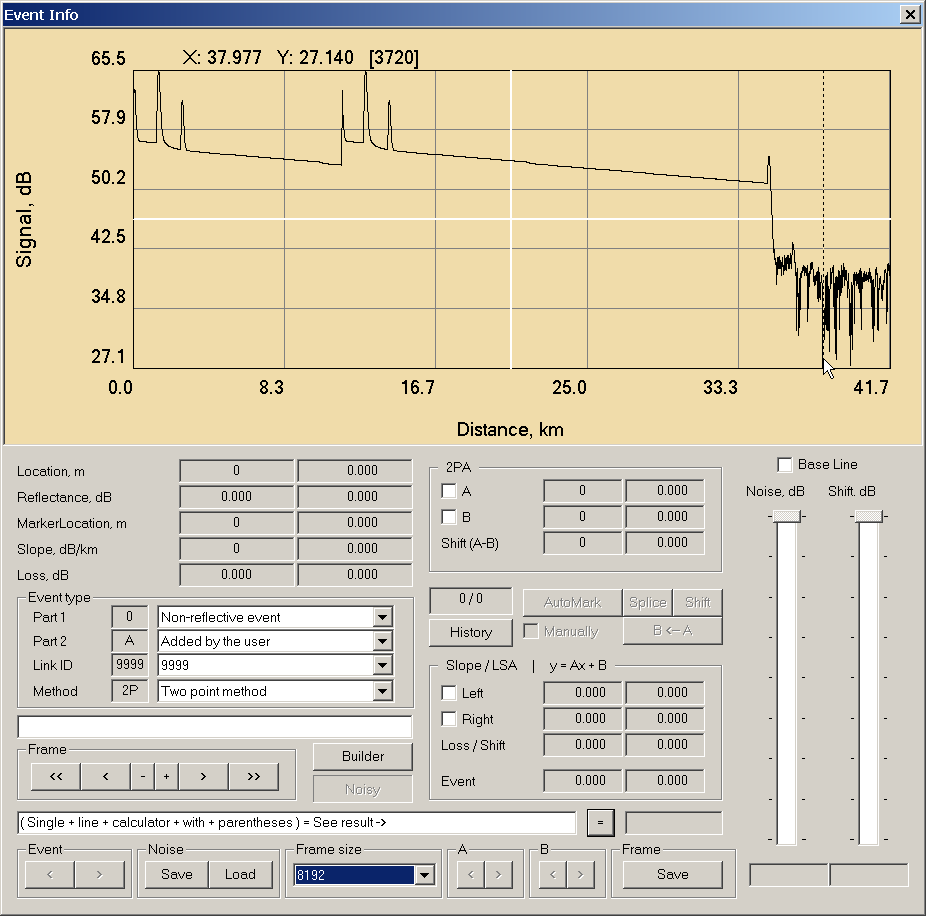
|